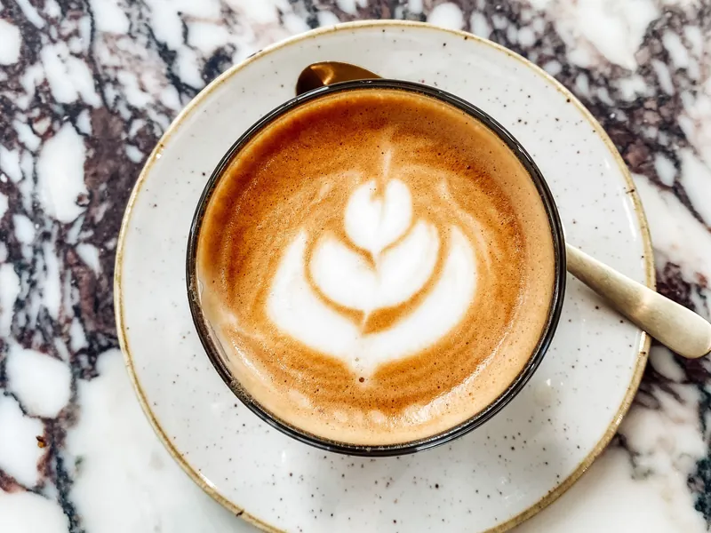
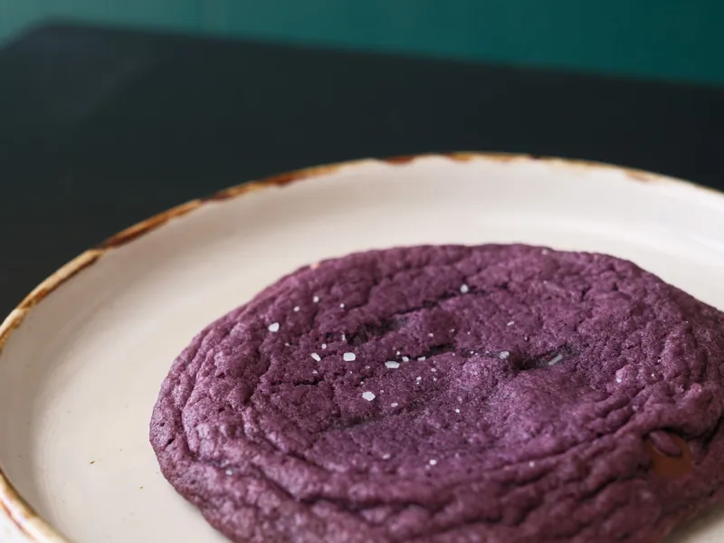

Ube-poeder.
Gemaakt van Filipijnse paarse yam (ube) [verwerkingsmethode – TBC]. Voor gebak, dranken en desserts, van een café-latte tot een vulling op de productielijn.
- Ingrediënten: [TBC]
- Uiterlijk: [TBC na partijtest]
- Deeltjesgrootte: [TBC]
- Vocht: [TBC]
- Verpakkingen: [bijv. zak van 1 kg, bulkzakken – TBC]
- Houdbaarheid · opslag: [TBC]
- Allergenen: [Allergenenverklaring – TBC]
- MOQ · levertijd: [MOQ – TBC] · [Levertijd – TBC]
- Doseeradvies: [TBC na toepassingstests]
- Documenten: specificatieblad · CoA per partij (gepland) · [Overige documenten – TBC]
Bij elk sample sturen we het specificatieblad mee. Partijdocumenten zijn gepland bij elke order. [Documentenlijst – TBC]


